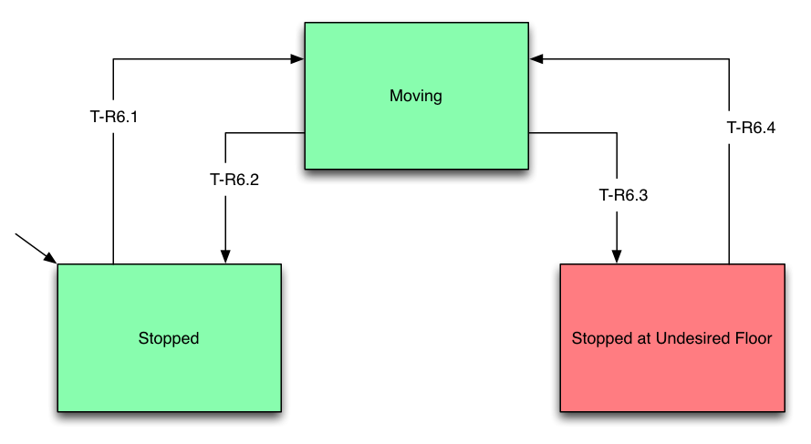
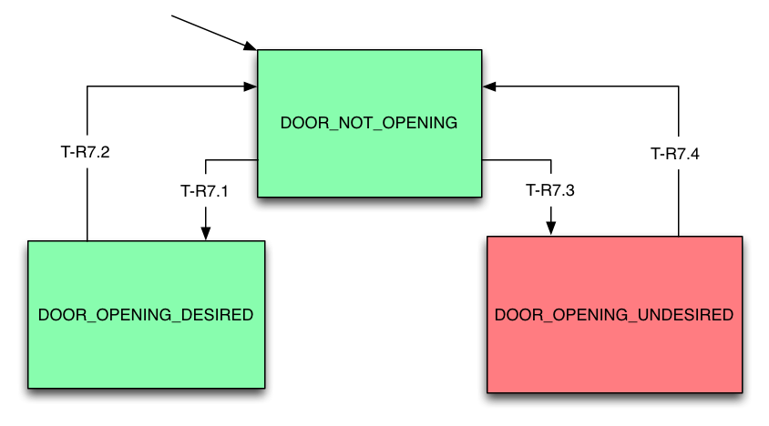
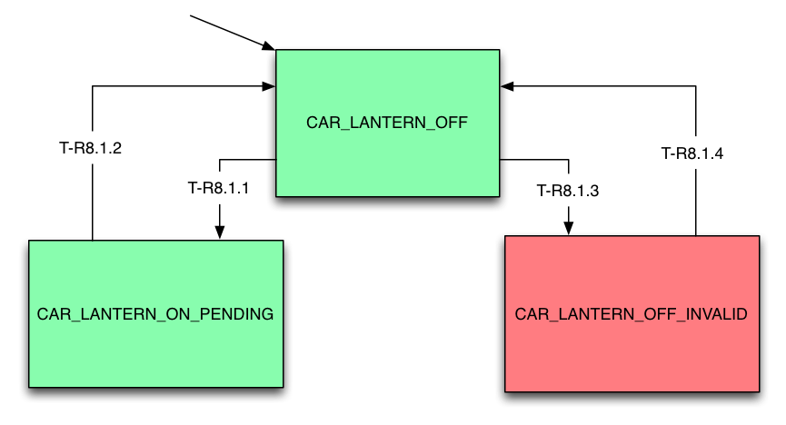
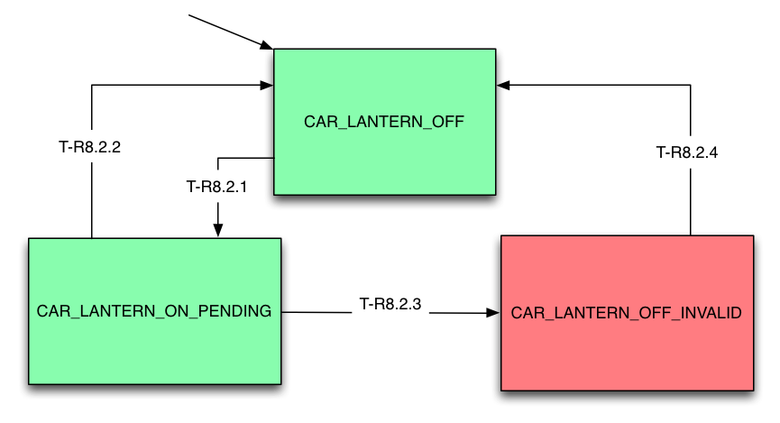
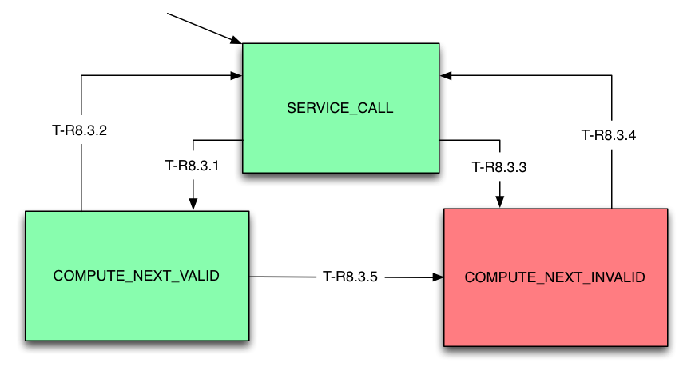

High Level Requirements:
R-T6: The Car shall only stop at Floors for which there are
pending calls.
R-T7: The Car shall only open Doors at Hallways for which there
are pending calls.
R-T8: The Car Lanterns shall be use in a way that does not confuse
passengers.
R-T9: The Drive shall be commanded to fast speed to the maximum
degree practicable.
R-T10: For each stop at a floor, at least one door reversal shall
have occured before the doors are commanded to nudge.
R-T9: The Drive shall be commanded to fast speed to the maximum
degree practicable.
The monitor should check to see whether the Drive is not commanded
to fast when it should be via commit-point, and current car
position, and throw a warning if not.
R-T10: For each stop at a floor, at least one door reversal shall
have occured before the doors are commanded to nudge.
The monitor should check to see whether any door has been
commanded to nudge when there has not been any prior door
reversals, and throw a warning if so.
If a door reversal has occurred, a message should be output
indicating such, so that return from invalid state can be
determined.

| Transition |
Condition |
| T-R6.1 |
mDriveSpeed != Stop |
| T-R6.2 | mDriveSpeed == Stop
&& CurrentFloor == mDesiredFloor.f |
| T-R6.3 | mDriveSpeed == Stop
&& CurrentFloor != mDesiredFloor.f |
| T-R6.4 | mDriveSpeed != Stop |

Note:
- Network message mDesiredFloor is updated by
Dispatcher to service the nearest pending call.
- hadCalls(b) checks the recorded state of
calls for hallway b for mDesiredFloor[f,b,d] before the elevator
arrived.
| Transition |
Condition |
| T-R7.1 |
mDesiredFloor[f,b,d].f==CurrentFloor
&& hadCalls(b) |
| T-R7.2 | mDoorOpened[b,r]==True |
| T-R7.3 | mDesiredFloor[f,b,d].f==CurrentFloor && !hadCalls(b) |
| T-R7.4 | mDoorOpened[b,r]==True |
Runtime Monitor State Chart:

Note:
- The invalid state occurs when all
CarLantern[d] fail to turn on when the conditions of R-T8.1 are
asserted.
- These transitions are based on BR7.2, and
hence T7.1
| Transition |
Condition |
| T-R8.1.1 |
(CarLantern[d]==ON) && (mAtFloor[f,b] == true) && (mDesiredFloor.f == f) && (mDesiredFloor.d == d) && (any mDoorClosed[b,r] == false) |
| T-R8.1.2 | (mDesiredFloor.d != d) || (all mDoorClosed[b,r] == true) |
| T-R8.1.3 | (CarLantern[d]==OFF) && (mAtFloor[f,b] == true) && (mDesiredFloor.f == f) && (mDesiredFloor.d == d) && (any mDoorClosed[b,r] == false); |
| T-R8.1.4 | (mDesiredFloor.d != d) || (all mDoorClosed[b,r] == true) |
Runtime Monitor State Chart:

| Transition |
Condition |
| T-R8.2.1 |
any
CarLantern[d]==Lighted && any
mDoorClosed[b,r]==false |
| T-R8.2.2 | (all mDoorClosed[b,r]==true) |
| T-R8.2.3 | (all
CarLantern[d]==Not Lighted) || (any
CarLantern[~d]==Lighted) |
| T-R8.2.4 | (all mDoorClosed[b,r]==true) |
Runtime Monitor State Chart:

Note:
lastLantern(d) checks the recorded state of lantern direction d
when elevator was last stopped.
hasCall(f,d) returns true if the elevator had a call in direction
d when it was last stopped.
| Transition |
Condition |
| T-R8.3.1 |
lastLantern(d)
&& !lastLantern(~d) &&
hasCall(lastStoppedFloor, d) |
| T-R8.3.2 | CurrentFloor == TargetFloor |
| T-R8.3.3 | !lastLantern(d) && lastLantern(~d) && hasCall(lastStoppedFloor, d) |
| T-R8.3.4 | CurrentFloor == TargetFloor |
| T-R8.3.5 | !lastLantern(d) && lastLantern(~d) && hasCall(lastStoppedFloor, d) |
| Acceptance Test Name |
Verification Status |
Link to Verification Results |
Notes |
| basicpass.pass | Pass | elevator-basicpass.pass-0.stats | Passed |
| proj7acceptance1.pass |
Pass | Passed |
|
| proj7acceptance2.pass |
Pass | Passed |
|
| proj7acceptance3.pass |
Pass | Passed |
|
| proj8group17acceptance1.pass |
Pass | Passed |
|
| proj10acceptance1.pass | Pass | Passed | |
| proj10acceptance2.pass | Pass | Passed | |
| proj10acceptance3.pass | Pass | Passed | |
| proj11acceptance1.pass |
Pass |
elevator-proj11acceptance1.pass-0.stats | Passed |
| proj11acceptance2.pass |
Pass | elevator-proj11acceptance2.pass-0.stats |
Passed |
| proj11acceptance3.pass |
Pass | elevator-proj11acceptance3.pass-0.stats |
Passed |
| uppeak_final.pass |
R-T10: Door nudged before reversal = 1 -> false positive confirmed |
elevator-uppeak_final.pass-0.stats |
Passed |
| downpeak_final.pass |
R-T6: Stopped at floor with no calls = 1 -> false positive confirmed |
elevator-downpeak_final.pass-0.stats |
Passed |
| normal_final.pass |
Pass |
elevator-normal_final.pass-0.stats |
Passed |